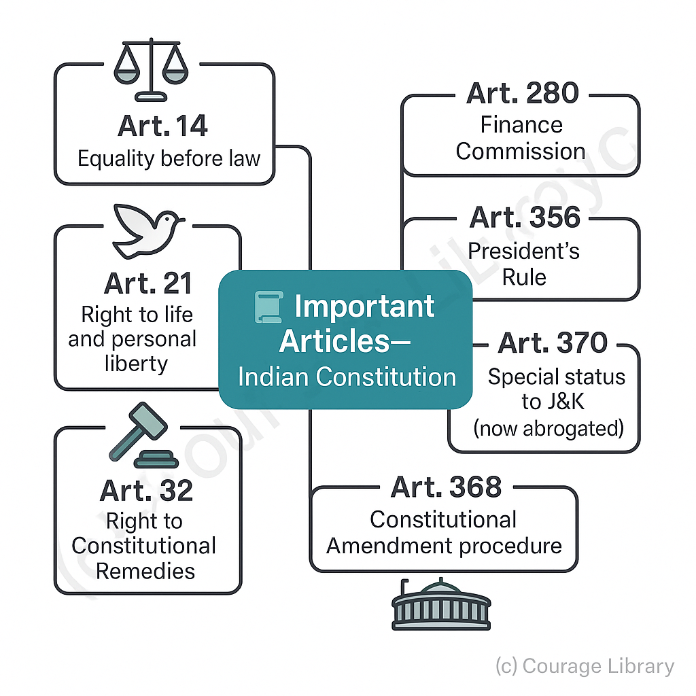
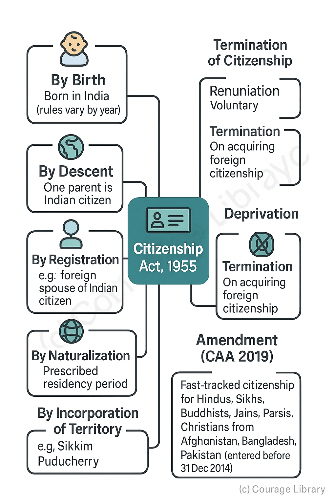

SSC CGL - Detailed Guide 2025
Self-Paced Course
Miscellaneous Topics in Indian Polity
Reference: Lucent GK, NCERT Class 6–12
Schedules and Important Articles of the Indian Constitution
Schedules of the Constitution:
| Schedule | Content Description |
|---|---|
| 1st | Names of States and Union Territories; their territorial jurisdiction |
| 2nd | Salaries & allowances of President, Governors, Judges, Speakers, etc. |
| 3rd | Forms of oaths/affirmations for constitutional positions |
| 4th | Allocation of seats in Rajya Sabha to states & UTs |
| 5th | Administration & control of Scheduled Areas & Tribes |
| 6th | Provisions for administration of Tribal Areas in Assam, Meghalaya, Tripura, Mizoram |
| 7th | Division of powers – Union, State & Concurrent Lists |
| 8th | 22 Official Languages of India |
| 9th | Laws exempted from judicial review (added via 1st Amendment; now subject to review) |
| 10th | Provisions related to Anti-Defection Law (52nd Amendment, 1985) |
| 11th | Powers, authority, responsibilities of Panchayats (added by 73rd Amendment) |
| 12th | Powers, authority, responsibilities of Municipalities (added by 74th Amendment) |
Important Articles (frequently asked):
- Art. 14 – Equality before law
- Art. 21 – Right to life and personal liberty
- Art. 32 – Right to Constitutional Remedies
- Art. 44 – Uniform Civil Code (DPSP)
- Art. 280 – Finance Commission
- Art. 356 – President's Rule
- Art. 370 – Special status to J&K (now abrogated)
- Art. 368 – Constitutional Amendment procedure

Important Committees
| Committee | Purpose/Contribution |
|---|---|
| Sarkaria Commission (1983) | Center-State Relations; emphasized cooperative federalism |
| Punchhi Commission (2007) | Also on Center-State relations; recommended setting up of Inter-State Trade and Commerce Commission |
| Balwantrai Mehta Committee (1957) | Introduced 3-tier Panchayati Raj System |
| Ashok Mehta Committee (1977) | Suggested 2-tier Panchayati Raj System |
| Mandal Commission (1979) | OBC reservations in jobs and education |
| Rajmannar Committee (1969) | Tamil Nadu-based; demanded more state autonomy |
| NITI Aayog-related committees | Several reform-based suggestions since 2015 |
Recent Constitutional Developments (Important Amendments & Events)
| Amendment / Event | Year | Description |
|---|---|---|
| 101st Amendment | 2016 | Introduction of GST (Goods and Services Tax) |
| 103rd Amendment | 2019 | 10% EWS Reservation (Economically Weaker Sections) |
| 104th Amendment | 2020 | Abolished Anglo-Indian reservation in Lok Sabha & State Assemblies |
| Abrogation of Art. 370 | 2019 | Special status to J&K removed; J&K reorganized as UT |
| Citizenship Amendment Act (CAA) | 2019 | Citizenship to non-Muslim minorities from neighboring countries; controversial |
Note: Keep track of developments like One Nation One Election, Uniform Civil Code (UCC), and Digital Personal Data Protection Act as they may be relevant in coming exams.
Indian Citizenship
Constitutional Basis:
| Article | Provision |
|---|---|
| Art. 5–11 | Part II of Constitution; deals with citizenship at the commencement of the Constitution |
Citizenship Act, 1955:
Modes of acquiring citizenship:
- By Birth – If born in India (rules vary by year)
- By Descent – If one parent is an Indian citizen
- By Registration – e.g. foreign spouse of Indian citizen
- By Naturalization – After prescribed residency
- By Incorporation of Territory – e.g., Sikkim, Puducherry
Termination of Citizenship:
- By Renunciation
- By Termination (when acquiring foreign citizenship)
- By Deprivation (in case of fraud, disloyalty)
Amendment:
The Citizenship Amendment Act, 2019 allows fast-tracked citizenship to religious minorities (Hindus, Sikhs, Buddhists, Jains, Parsis, Christians) from Afghanistan, Bangladesh, Pakistan, who entered India before 31 Dec 2014.

Political Terms – Definitions & Relevance
| Term | Description |
|---|---|
| Coalition Government | A government formed by an alliance of two or more political parties |
| Anti-defection Law | Prevents legislators from switching parties post-election (10th Schedule) |
| Whip | A directive issued by party leadership to legislators to vote a certain way |
| Hung Parliament | When no single party gets a majority in Lok Sabha/Assembly |
| Floor Crossing | When a legislator switches party without resigning |
| Speaker’s Role in Defection | Final decision maker under the 10th Schedule; subject to judicial review |
| Majority Types | Absolute, Simple, Effective, Special – all are asked frequently in exams |
Summary Sheet for Quick Revision
- Constitution = 25 Parts, 12 Schedules, 470+ Articles
- Key Bodies: ECI, UPSC, NHRC, CVC, CBI – know Article, role, tenure
- Important Amendments: 42nd, 44th, 73rd, 74th, 101st, 103rd
- Citizenship = 5 acquisition modes, 3 loss modes
- Key terms = Coalition, Whip, Hung Parliament, Anti-Defection
Developed By Jan Mohammad
Next
Start Your SSC CGL Journey Now!
Join Courage Library to experience disciplined study and expert support.
Be a Couragian!